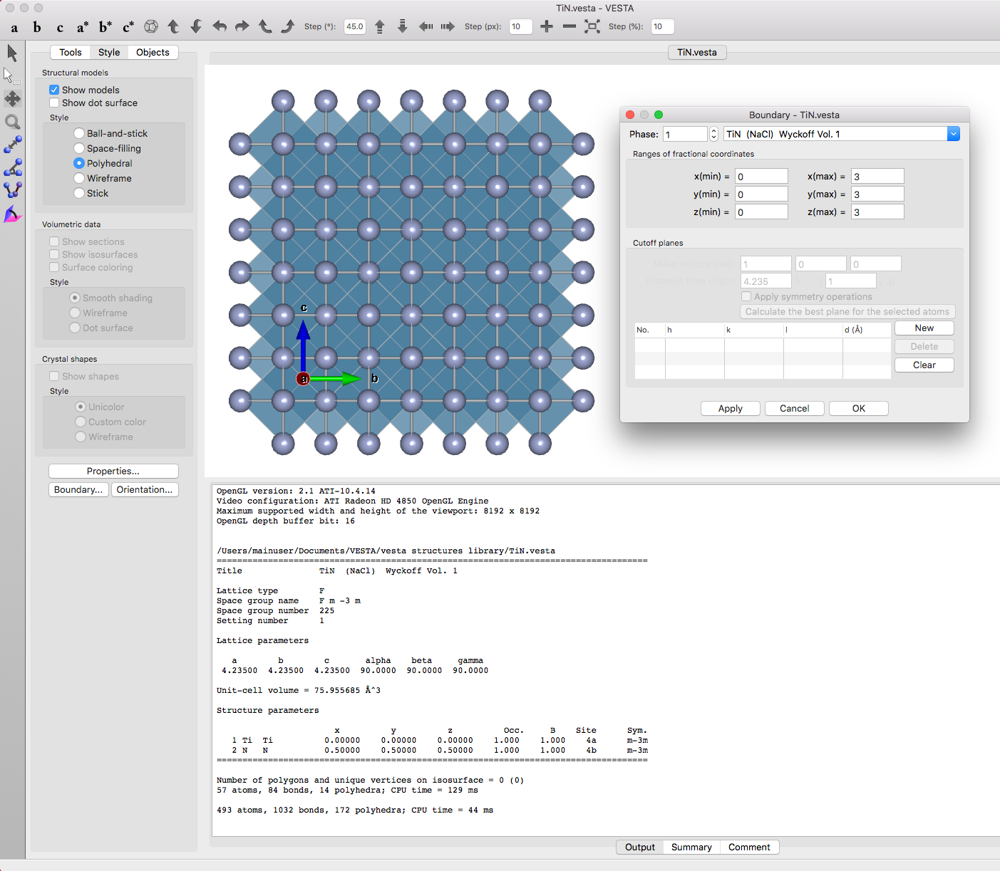
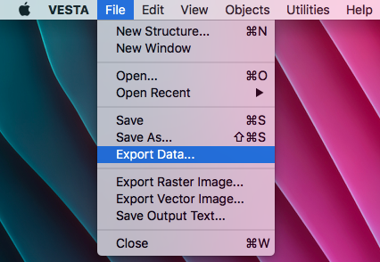
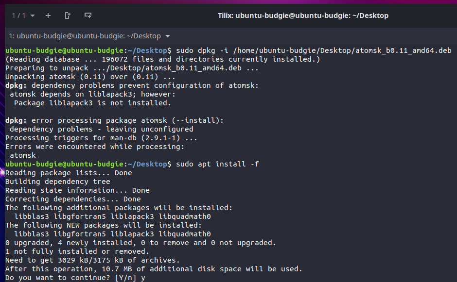
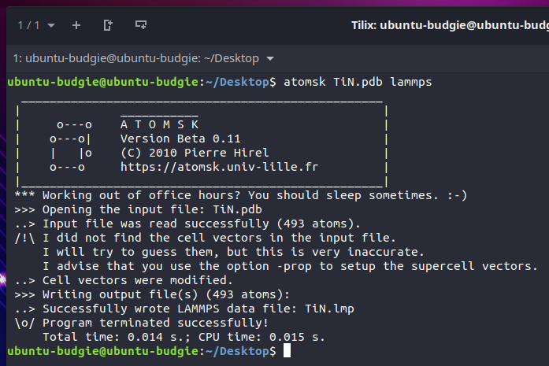
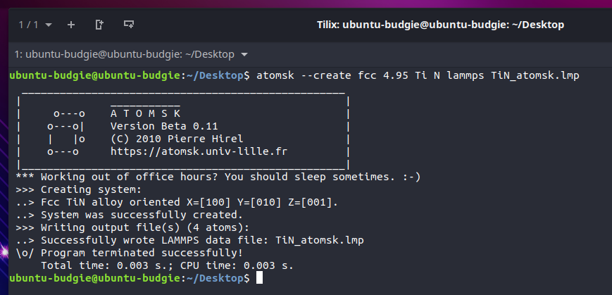

Atomsk is a software package for manipulating crystallographic information that can be later used in many computational programs like lammps and Quantum Espresso. Here is a quick guide for the installation and use of Atomsk to generate input files for lammps.
I start in VESTA by making a supercell of the size that I am interested in of the species that I am interested in. Here, I make a 3x3x3 supercell of TiN from a crystal infomration file which is also available here in .vesta format.
Next, use VESTA to export the crystal supercell that you have generated in .pdb format. Other formats like .xyz can work as well. The .pdb file I generated with VESTA is also available here in .pdb format.
At the time of this writing, the Atomsk software is not available for MacOS so we will continue in Ubuntu. Download the Atomsk deb file from https://atomsk.univ-lille.fr/dl.php and install it using your choice of method. In my case I use dpkg. In order to use this method of installation, run $sudo dpkg -i /home/ubuntu-budgie/Desktop/atomsk_b0.11_amd64.deb where the file location and name will need to be changed ot suit your specific file name and location. It is VERY important here to have the system connected to the internet in this case because the installer will need to download several libraries. To continue the download of these libraries, run the following command: $sudo apt install -f
Now that we have Atomsk installed, we can generate .lmp data files for calculations that we are interested in. These steps can be seen in the terminal below and are as simple as running the Atomsk command on the file name we have generated before and specifying the program that the resulting data file should be formatted for.
The data file that Atomsk created is given in the frame below. It is important to note that this data file contains an extra column of charges!! If this is not what you want, your lammps calculation may crash. The charges can probably be removed in Atomsk but I just remove then in a normal text editor by seraching for and removing any instances of exactly 0.000000
Atomsk can do WAY more than I touch on here, one nice thing is to generate minimal crystalographic data files for lightweight tests of calculations in lammps. This can be done in the case of TiN with the following where I use Atomsk to create an fcc lattice with lattice parameter 4.95 angstroms with atoms Ti and N and export it as a file named TiN_lammps.lmp.
The resulting .lmp file is given below